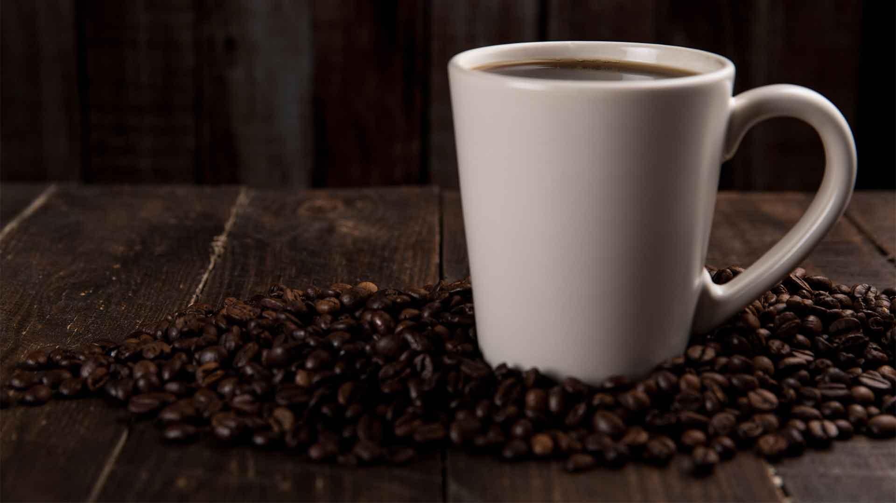
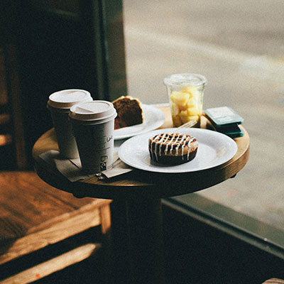

Kahveni al,
köşene kıvrıl.
Café Cocon; evden çalışanlar, kitabına gömülenler ve sohbeti uzatanlar için sıcacık bir koza. Fransız fırınından taze lezzetler, doğaya saygıyla hazırlanan iyi kahve ve gün boyu oturabileceğin bir masa seni bekliyor.


Evden çıkmak istediğin günlerin ofisi
Mutfak masası sıkmaya başladıysa laptopunu kap ve gel. Rahat sandalyeler, yumuşak ışık ve arka planda kısık müzik. Kendini işine verirken kahven hiç bitmesin.
Kapıyı kapat, dünya sussun.
Üç odamızın her biri tek kişilik ve ses geçirmiyor. Toplantına gir, sunumunu prova et ya da sadece sessizce odaklan.
İyi kahve, Fransız fırınından tatlılar
Sabah kruvasanından öğleden sonra kahvesine, gün boyu taze.

Kahveler
Fransız fırını
Kozamız küçük, dünyamız tek.
Bir fincan kahvenin yolculuğu tarladan başlayıp çöp kutusunda bitmesin istiyoruz. Bu yüzden küçük ama her gün tekrarlanan seçimler yapıyoruz.
Köşen seni beklesin
Ses yalıtımlı tek kişilik çalışma odalarından biri ya da salondaki küçük masalardan biri; hangisini istersen ayıralım. Ayırttığın yeri [BEKLEME SÜRESİ] tutuyoruz.
Maltepe sahiline birkaç adım
Yalı Mahallesi, Maltepe / İstanbul
Hafta sonu: [AÇILIŞ – KAPANIŞ]